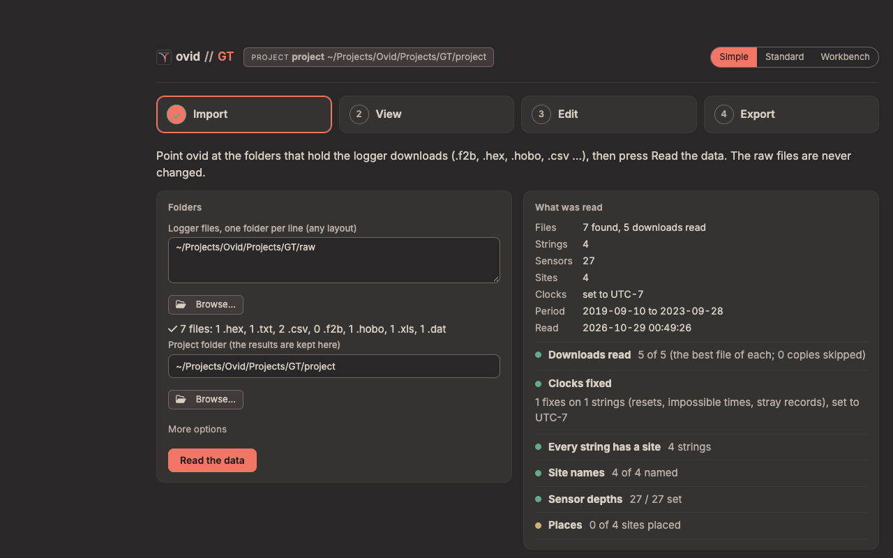

ovid GT how-to guide
One task per section: when to use it, the steps, what changes and how to check it. Page names are those in the contents on the right of the Standard view (1 Bring in, 2 Organize, 3 Correct, 4 Report and More). For a first project, start with the GT quick start; for what GT does to the data and why, see the GT reference guide.
Contents
Simple: 1. Check the sites after a field visit; 2. Set the depths of a string
Bring in: 3. Add a new download; 4. Read a download that needs an export
Organize: 5. Give a string a site, dates or depths; 6. Decide what the run found; 7. Rename a site or hide it
Correct: 8. Set the time zone of files that state none; 9. Fix a logger clock; 10. Remove a stretch of data; 11. Change a quality limit; 12. Switch an automatic correction off
Check and report: 13. Look at a site over time; 14. Export data and reports; 15. Report a problem
The three views
The same project, data and edits in three views, switched at the top (Simple, Standard, Workbench) or with ?ui=simple, ?ui=standard or ?ui=workbench in the address. A new install opens in Simple.

- Simple: a field check in four steps (Import, View, Edit, Export). Edit sets sensor depths, renames sites, places them, sets their land cover and moves strings between them; it changes no data value.
- Standard: the set-up flow these tasks use: bring in files, organize strings, sites and depths, correct, report.
- Workbench: every change to the data by hand. Removals, quality rules, clock corrections, corrections over a period and ground-surface changes are edited here; Standard shows those tables and points to the Workbench.
1. Check the sites after a field visit
when: New downloads are in the data folder and you want to know whether every string is recording.
- Simple, Import: press Read the data. What was read lists the files and the checklist.
- View: a tile per site. Amber or red tiles need a look; Need a look shows only those. Each tile's link opens the Standard page that fixes it (Needs you, Sensor health, or the depths).
- Export: Download the report (HTML) with your initials, for a one-page record of the check.
result: Nothing changes in the set-up; the report records the period, the sites, what needs a look and the methods with their sources.
2. Set the depths of a string
when: A site's depths are assumed (default or template), or a string was reinstalled at other depths.
- Simple, Edit: pick the site under Sensor depths.
- Type each depth in metres below the surface; add + for a sensor above the ground, e.g. +0.10. Even steps, Paste a list, Copy from site… or the model's template fill several at once.
- Add to changes, then Save. To give every site with the same model and sensor count these depths, use the option under the list.
- Import, Read the data.
result: The depths are written to the set-up tables (the old version is kept in the project's history); MAGT and ALT are computed at the new depths.
check: The tile's sensor count and depth range, and Sensor depths in the checklist under What was read.
3. Add a new download
when: After a field visit, with new logger files.
- Copy the files into a data folder, each logger's file with its export.
- Press Run (Standard) or Read the data (Simple).
result: Only loggers whose files or set-up changed are read again; a logger's downloads are joined into one record.
check: Bring in files lists each file with its status.
4. Read a download that needs an export
when: Bring in files shows a bundle as needs export: a .f2b or .hobo with no readable export beside it.
- Open the file in FG2-Shell (GeoPrecision) or HOBOware Pro's Bulk Export (Onset) and write the CSV into the same folder.
- Press Run.
result: The bundle is read from its export. A Campbell table that is not TOA5 must be converted with CardConvert first.
5. Give a string a site, dates or depths
when: A string has no site, is at the wrong site, or moved during the record.
- Loggers, sensors and depths (2 Organize): each sensor's site, depth, start and end.
- Double-click a cell to change it, then Save changes and Run.
result: The string's records are given to the site for those dates. A match by dates is assigned on its own; anything else is a suggestion on Needs you.
check: Sites: rename, what shows, landcover lists each site with its strings.
6. Decide what the run found
when: Needs you shows a count.
- Needs you (2 Organize): each line is grouped by site and says what to do: decide a flag (keep, remove or note), fix in ovid a set-up change, raw data a problem in the files, or add a file that may exist.
- Use the line's button, or follow its link to the page that settles it.
result: A kept flag stays in the data as a flag. A removal becomes a row in Corrections over a period.
7. Rename a site or hide it
- Sites: rename, what shows, landcover (2 Organize): rename a site once and it is renamed in every set-up table, with a preview and Undo.
- What shows chooses which sites appear on the strip, the overview and Needs you; a hidden site is still processed.
8. Set the time zone of files that state none
when: Some files that state no time zone were logged in a different zone from the one given at the first run.
- Clocks (3 Correct): the files and the zone each was read in.
- In the Time zones table, Add row with the serial, model, file pattern or dates, and the offset from UTC; Save changes, then Run.
check: The site plot has no whole-hour step at the download.
9. Fix a logger clock
when: A logger's clock was wrong by a known amount, or reset.
- Clocks shows Clock corrections; it changes data values, so it is edited by hand in the Workbench (the link under it, or the switch at the top right).
- In the Workbench, add a row with the serial, the start and end (blank = all of its record) and
shift_minutes; save, then Run.
result: The readings are moved in time; each shifted record is in the audit trail. Without a known offset, the records after a reset stay out.
10. Remove a stretch of data
when: A sensor was exposed, frost-heaved, or logging before it was in the ground.
- Switch to Workbench. In the tree, pick the site.
- Shift + drag across the chart to select the stretch; the inspector shows its count, mean, minimum, maximum and how many are already removed or flagged.
- Remove, Flag or Restore, with a reason and your initials. Then Run.
result: A row is added to Corrections over a period. The old values stay in the audit trail; raw files are never changed.
11. Change a quality limit
when: A limit removes good readings, or lets bad ones through.
- Quality rules (3 Correct) shows the rules; they are edited by hand in the Workbench.
- In the Workbench, change min, max, max_spike or max_flat_hours, and the action (remove or flag); save, then Run.
result: Each removal or flag carries the rule's ID. The seeded limits are ovid defaults with no published source (reference guide, section 17): check them against your sensors.
12. Switch an automatic correction off
- Automatic corrections (3 Correct) lists everything a run changes on its own, each with a switch.
- Turn it off, then Run.
check: The Audit trail (More) no longer lists that correction.
13. Look at a site over time
- Plot and explore (More): pick the site and the depths. The view bar sets half-hourly, hourly, daily, monthly or annual values.
- Drag left to right zooms in, right to left zooms out; Shift + drag selects a stretch; double-click shows the whole record. To remove a stretch, use the Workbench (task 10).
- Compare sites (More) shows the between-site check: a site that does not follow the others.
result: Nothing changes in the project.
14. Export data and reports
- Report (4 Report): pick the sites and the format (HTML, PDF or both).
- In Simple, Export gives the one-page field check report and the daily temperatures per site.
result: Every run also writes output/report.html. Exports carry WMO quality codes and a README of the methods and their sources.
15. Report a problem
when: A page shows a notice with a reference (E- and six characters), or a run stops.
- Press the life-ring button on the top bar: it downloads the troubleshooting zip (versions, logs, problems and the set-up; no raw data).
- Send it with the reference.
The GT reference guide's Troubleshooting section lists the common messages and what to do.
ovid GT. For what GT does to the data and why, see the GT reference guide.